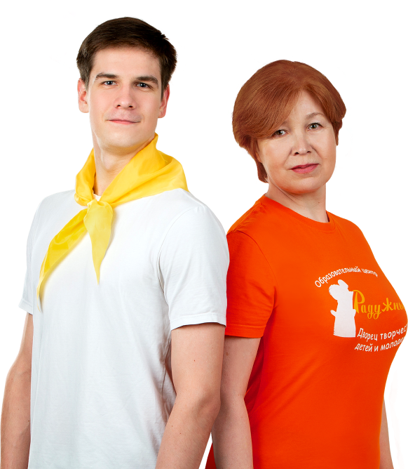
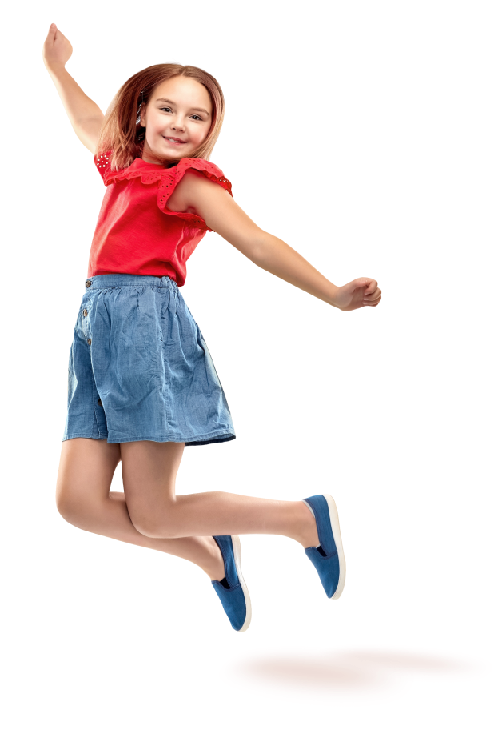

«Радужный» — загородный образовательный центр. Дети проводят здесь летние каникулы: отдыхают и занимаются в творческих кружках и спортивных секциях. Занятия ведут педагоги городского дворца творчества.
Лагерь находится посреди смешанного леса на берегу реки Малая Кокшага. От центра Йошкар-Олы до «Радужного» — 15 минут на машине: можно навестить ребёнка в любой день или приехать на отчётный гала-концерт, который ребята готовят к концу смены.
минут
на машине от центра Йошкар-Олы до «Радужного»
Основа каждой смены — кружки, которые ведут педагоги дворца творчества. Смены не повторяются: меняются профиль и тема.
Если профиль спортивный, дети ежедневно занимаются в секциях гимнастики, боевых искусств, футбола и волейбола. Если уклон в творчество, основные занятия — рисование, рукоделие, музыка. Есть смены, где дети учатся работать в команде, выступать на публике, ставят театральные представления.
Ребята учатся приёмам самообороны
Баскетбол, футбол, волейбол, пейнтбол, бег, тэкэндо, гимнастика — занятия рассчитаны на детей с разным уровнем подготовки.
Боевым искусствам, стрельбе из пейнтбольного оружия, игре в волейбол, футбол и баскетбол, плаванию, гимнастике.

Дети разучивают танцы, а потом снимают под них клипы в живописных местах

Дети освоят разные стили танцев: от марийской хороводной до hip-hop, jazz-funk, house.
Ритмопластике, основам народно- сценического танца, эстрадным танцам, игротанцам.

Под живую музыку дети поют народные песни
Ребята узнают об истории и культуре народов России: занимаются в мастерских народного творчества, изучают фольклор, проводят ярмарки.
Шить народные костюмы, плести кукол, рисовать, танцевать народные танцы, петь народные песни.

Жилые корпуса отремонтировали в 2020 году: внутри полностью обновили санузлы и сделали косметический ремонт в комнатах.
Летней ночью бывает прохладно, но дети не мёрзнут — все корпуса отапливаются.
Мебель и постельные принадлежности дезинфицируются после каждой смены


В каждом корпусе есть по два санузла с горячей водой
В первой половине дня дети занимаются в профильных кружках. Темы кружков зависят от профиля смены.
После обеда — время развлечений. Ребята играют в пейнтбол, занимаются исторической реконструкцией, запускают ракеты, собирают роботов, поют, танцуют, рисуют.
В лагере 22 вида дополнительных занятий. Можно каждый день заниматься в разных кружках или посвятить время чему-то одному — научиться рисовать пейзажи, петь в хоре или делать мультфильмы.
Рукоделие Дети собирают оригами, занимаются бисероплетением, плетут из ниток, делают поделки из фетра
Реконструкция. В лагерь приезжают реконструкторы из «Древнерусской богатырской заставы», привозят реквизит. Дети участвуют в боях и народных играх
Рисование Педагоги учат рисовать с нуля: в лагере ребёнок нарисует первую картину
Театральное мастерство Дети учатся актёрскому мастерству и ораторскому искусству. Играют в пьесах и ставят кукольные спектакли
Пейнтбол. Полезная игра в «стрелялки»: дети активно двигаются, учатся работать в команде. Каждому игроку выдаём средства защиты: маски и костюмы
Плавание. Дети учатся плавать и купаются в жару. Всё — под контролем инструктора и вожатых
Музыка
Дети учатся петь в хоре.
На финале смены, у костра, весь лагерь поёт песни о лагере. После смены многие записываются
в кружок гитары во дворце творчества
Мультипликация и тележурналистика В лагере есть видеостудия: дети рисуют мультфильмы, снимают репортажи о лагере, монтируют видеоролики
Робототехника. Под руководством педагога дети создают роботов: проектируют, собирают и испытывают. В процессе изучают основы механики
Вожатый — старший товарищ. Помогает детям и развлекает их.
Все вожатые — бывшие воспитанники дворца творчества, прошли «Школу вожатых» и сдали экзамен.
Иван, вожатый
Педагог — наставник и воспитатель. Он занимается с детьми: проводит зарядку, ведёт курсы и следит за порядком.
Всегда на связи с родителями.
Нина Альбертовна, педагог
Перед открытием обрабатываем территорию лагеря от насекомых и грызунов.
В лагере круглосуточно работает медпункт. Лагерь бесплатно оформляет детям медицинскую страховку.
Лагерь огорожен, дежурит охрана. Есть система оповещения МЧС: спасатели приедут за 5 минут.
ул. Мира, 9а/10, д. Сенькино,
Медведевский район, Республика Марий Эл
17 минут от Дворца творчества детей и молодёжи
25 минут от автовокзала.
Рейс «Йошкар-Ола — Шойбулак» ходит каждые полчаса.
Остановка у деревни Сенькино
Какие документы нужно подготовить, чтобы оформить путёвку??
Копия свидетельства о рождении или паспорта;
Копия страхового медицинского полиса;
Медицинская справка о здоровье ребёнка по форме 079у. Можно взять у врача в школьном медпункте;
Результаты анализов на энтеробиоз и яйцеглист. Действительны один месяц. Получить можно в районной поликлинике или частной медицинской лаборатории.
Скачать список документов ПДФ, 200 КБ
Я могу оплатить путёвку в рассрочку?
Конечно. Чтобы забронировать место, внесите предоплату — 5% от стоимости. Остальную сумму вы можете оплатить до начала смены.
Как ребёнок доберётся до лагеря? Вы его довезёте?
В день заезда для ребят работает бесплатный трансфер. Автобус стартует от Дворца творчества детей и молодёжи — улица Пушкина, дом 32. Точную дату и время отъезда мы сообщаем родителям за несколько дней до начала смены.
Ребёнок заболел перед сменой. Мне вернут деньги?
Мы вернём полную стоимость путёвки — нужна только лишь справка от врача. Вы также можете перенести отдых и отправить ребёнка в лагерь, когда он выздоровеет.
Как связаться с ребёнком, пока он в лагере?
Если у ребёнка есть мобильный телефон, звоните ему в удобное время. Главное договориться об этом заранее и не нарушать распорядок дня в лагере. Например, не звонить во время тихого часа, когда другие дети спят.
Перед началом смены родители обмениваются номерами телефонов с руководителем смены и педагогами. Звоните им в любой день, чтобы узнать, как у ребёнка дела.
Если соскучились, приезжайте в лагерь. Только заранее предупредите об этом педагога.
Что делать, если ребёнок заболел в лагере?
Если ребёнок заболел во время отдыха, мы сразу сообщаем об этом родителям и предлагаем один из трёх вариантов действий:
Какая у вожатых подготовка? Они умеют работать с детьми?
Вожатые проходят «Школу вожатского мастерства» в Марийском государственном университете. Обучение идёт три месяца — 72 учебных часа. Каждый вожатый получает сертификат с печатью МарГУ.
Будущие вожатые учатся, как организовать ребят, во что с ними играть, как решать конфликты в детском коллективе. Изучают особенности возрастного развития детей.
Что делать, если ребёнку не понравилось в лагере?
Такое бывает, но редко. Педагоги и вожатые учитывают интересы детей, когда составляют развлекательную программу.
Если ребёнку не нравится в лагере и он хочет уехать, мы связываемся с родителями и рассказываем о ситуации. Если ребёнок все-таки решит уехать домой, вернём вам часть стоимости путёвки. Вычтем из суммы дни, в которые ребёнок отдыхал в лагере.
В стоимость также входит:
Перезвоним в рабочее время в течение часа
Проект Дворца творчества детей и молодёжи Республики Марий Эл
(8362) 42-51-11 По будням с 9 до 18
Разработчик: Александр Дьяконов
Дизайнер: Юлия Бурдукова
Редакторы: Яна Акимова, Павел Храмкин
Школа Бюро Горбунова, 2020 год